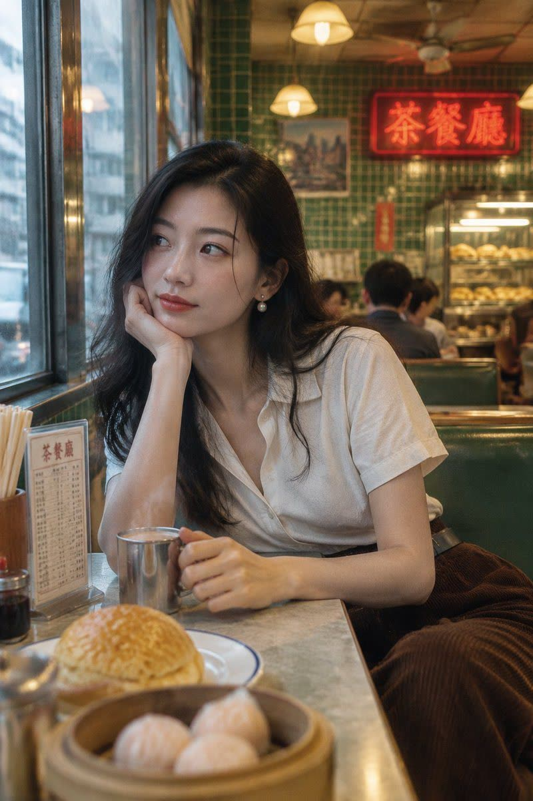

Retro Hong Kong Cha Chaan Teng Portrait Prompt
AES-007Aesthetic / GenreNano Banana Proby CandyOctober 12

A detailed prompt for generating a photorealistic portrait of a woman in a retro Hong Kong cafe setting, used in a comparison between GPT-image-2.5, Nano Banana 2, and Grok-imagine2.
Prompt
Retro Hong Kong cha chaan teng portrait, 90s Hong Kong film still aesthetic, candid documentary vibe. Subject: A 25-year-old adult East Asian female with an oval face, thin eyebrows, and dark pupils; fair skin preserving fine pores and natural textures, rejecting plastic-like smoothing; light makeup with reddish lips. Long black hair draped over shoulders with naturally curled ends, strands falling by the face. Expression: Eyes looking off-camera to the left, relaxed and lazy demeanor, a faint smile at the corners of the mouth, like being caught daydreaming in the afternoon. Clothing: Cream white pure cotton short-sleeved shirt with one button open at the collar; dark brown high-waisted corduroy wide-leg pants; black thin belt; pearl earrings. Outfit is clean and sharp, with vintage vibes hidden in details. Pose/Action: Sitting in a window-side booth at a cha chaan teng, body slightly turned towards the window, one elbow resting on the table holding a steaming silk stocking milk tea, the other hand casually supporting her chin. Relaxed posture, not stiff. Props: On the table are pineapple buns, shrimp dumplings in bamboo steamers, metal milk tea cups, menu boards, wooden chopstick holders. Environment: Foreground features slightly blurred milk tea cups and steamers; mid-ground shows the subject and booth table; background reveals the interior of the cha chaan teng—green mosaic tile walls, red neon sign 'Cha Chaan Teng', old-style ceiling fans, glass cabinets displaying egg tarts and pastries; distant diners appear as soft blurs. Lighting: Warm yellow indoor pendant lights as main light, color temperature around 3200K, wrapped in a thin haze of cooking oil smoke; cool daylight from outside serves as rim light, creating warm-cool contrast. Soft highlights reflect on glass cabinets and tiles. Camera: 50mm prime lens, f/2.0, half-body shot, eye-level slightly low angle, shallow depth of field, subject clear while foreground/background naturally blurred, slightly handheld casual framing, film grain, Kodak Gold film simulation, Eastmancolor palette. Mood: Nostalgic, slow-paced afternoon laziness, like a frozen frame from an old Hong Kong movie. Quality Tags: ultra detailed, photorealistic, cinematic, high resolution, natural skin texture. Negative Constraints: No oil painting, No anime, No 3D render, No cartoon, no deformed hands, no plastic skin, no oversaturated colors, no text artifacts, no watermark.
Our Seedance 2.5 adaptation
[ADAPTED for Seedance 2.5 by Grok Bot; not the creator's prompt. Follows the official BytePlus Seedance 2.5 prompt guide: asset binding → one-sentence summary → integer-second timeline → consistency notes → negatives.] API: duration 10, ratio 16:9, resolution 1080p, generate_audio true. Assets: Image 1 is the woman (identity lock). Image 2 is the cha chaan teng booth (scene reference). Summary: A 10-second 90s Hong Kong film-style candid. The woman from Image 1 daydreams in a window booth of the cha chaan teng from Image 2 on a humid afternoon. 0-4s: Medium shot through the window glass with slight reflections. She looks off-camera left with a lazy, faint smile. A milk tea sweats on the table. 4-7s: A ceiling fan turns slowly. She stirs the milk tea and a stray strand of hair falls across her face. 7-10s: She tucks the hair behind her ear and glances at the lens for one beat. Step-printed motion blur as a waiter passes in the foreground. Look: 90s Hong Kong cinema still aesthetic, saturated greens and warm tungsten, fluorescent spill, fine grain, slight halation. Keep consistent: the cream shirt, corduroy pants and pearl earrings. Real skin texture, no smoothing. Audio: busy diner chatter, clinking spoons, street traffic, the whir of the fan. No BGM. No subtitles.
Tags: handheld, 35mm film, neon, anime, portrait